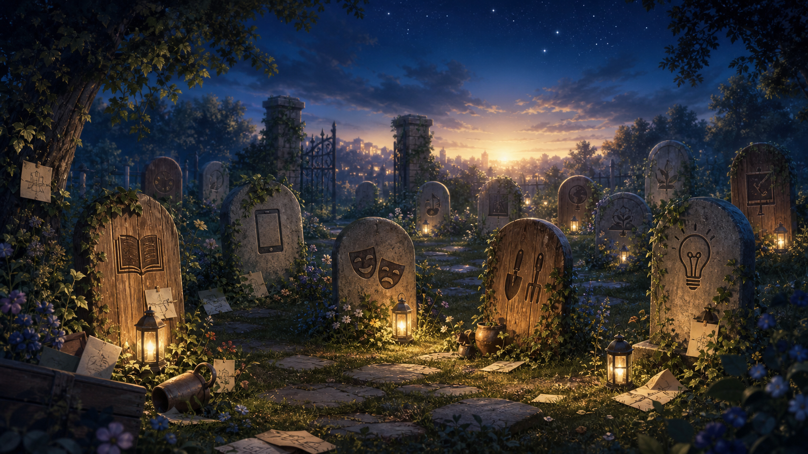

Lernen beginnt mit Vertrauen
Wir schaffen Räume, in denen Kinder, Jugendliche und Erwachsene mutig fragen, ausprobieren und wachsen dürfen.
Vision mit Haltung
Diese Demo-Startseite zeigt beispielhaft, wie eine Schule ihre gemeinsamen Werte sichtbar machen kann: klar, emotional und präsentationsstark. Alle Inhalte sind Platzhalter und lassen sich später leicht durch eure echten Leitsätze und Projekte ersetzen.
Leitsätze
Die sechs Karten kombinieren prägnante Aussagen mit einer knappen Übersetzung in den Schulalltag. So werden abstrakte Werte in der Präsentation schnell greifbar.
Wir schaffen Räume, in denen Kinder, Jugendliche und Erwachsene mutig fragen, ausprobieren und wachsen dürfen.
Unterschiedliche Perspektiven machen unsere Schule reicher und helfen uns, gerechtere Entscheidungen zu treffen.
Unterricht verbindet Wissen mit Verantwortung, Kreativität, Teamarbeit und sichtbarer Wirksamkeit.
Gute Schulentwicklung entsteht dort, wo Ideen geteilt, weitergedacht und gemeinsam getragen werden.
Wir betrachten Rückschläge nicht als Ende, sondern als Ausgangspunkt für bessere nächste Schritte.
Wir warten nicht auf perfekte Bedingungen, sondern beginnen mit dem, was heute möglich ist.
Projektfriedhof
Der Projektfriedhof ist kein Ort des Scheiterns, sondern ein ehrlicher Speicher für pausierte, versandete oder nie ganz gestartete Vorhaben. Wer zurückblickt, entdeckt oft verborgenes Potenzial.
Nicht jedes Projekt braucht einen Abschlussbericht. Manchmal braucht es nur einen späteren Zeitpunkt, ein neues Team oder einen anderen Einstieg.

Wiederauferstehungsoption
Diese Inszenierung zeigt, wie aus dem Projektfriedhof ein Lernlabor wird: mit Erinnerung, Auswahl und einer bewussten Entscheidung zum Neustart.
Wir schauen ohne Schuldgefühl auf liegengebliebene Ideen und erkennen ihren ursprünglichen Wert.
Wir passen Umfang, Zielgruppe oder Ressourcen so an, dass aus einer alten Idee ein realistischer neuer Pilot wird.
Wir geben ausgewählten Projekten ein zweites Leben und machen kleine nächste Schritte sichtbar.